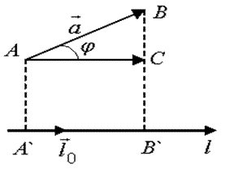

4.5. Скалярное произведение векторов. Определение. Алгебраические свойства.
Геометрические приложения. Выражение через декартовы координаты сомножителей
Углом между векторами  и
и
 (обозначается ) называется наименьший угол, на который
надо повернуть вектор до совмещения с вектором .
(обозначается ) называется наименьший угол, на который
надо повернуть вектор до совмещения с вектором .
и
(обозначается ) называется наименьший угол, на который
надо повернуть вектор до совмещения с вектором .
Проекцией вектора на
ось  , , называется
величина направленного отрезка оси .
, , называется
величина направленного отрезка оси .
на
ось , , называется
величина направленного отрезка оси .
Проекция
вектора на ось l
,
где – орт оси .
.Скалярным произведением двух векторов называется число,
равное произведению длин этих векторов на косинус угла между ними:
Скалярное
произведение векторов
.
Если один из векторов , нулевой, то  .
.
, нулевой, то .